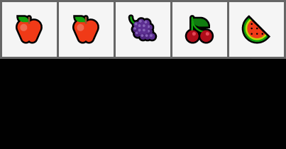
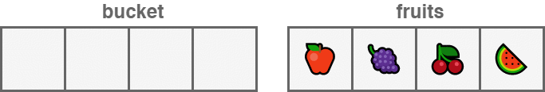
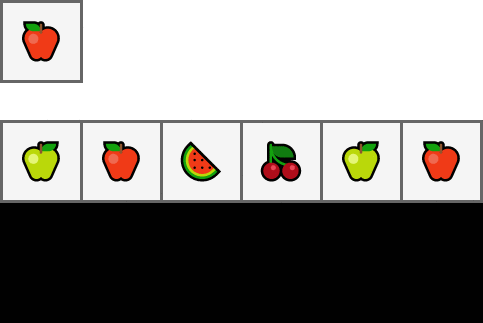
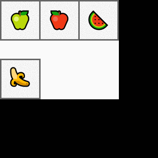
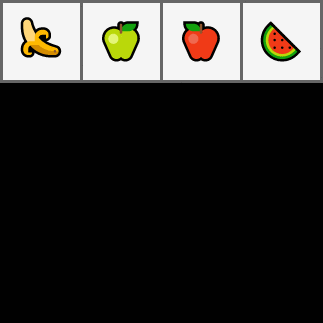
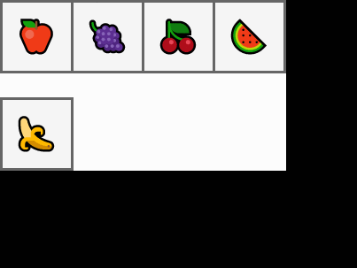
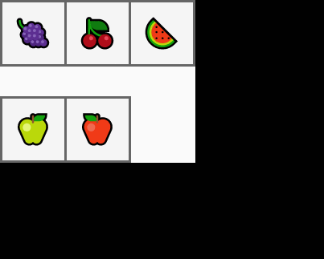
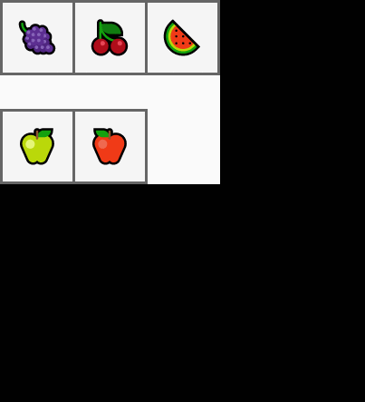
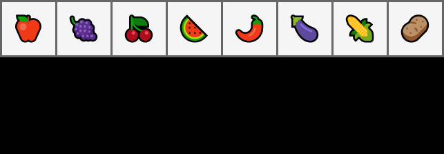
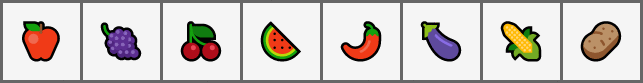

Veri Yapıları¶
Bu sayfa go diline ait veri yapıları ve bu yapıların genel programlamada uygulanan yöntemlerle kullanımı anlatılmaktadır.
Array¶
Arrayler aynı tipteki verileri bir arada muhafaza etmemizi sağlayan yapılardır. Örneğin; 4, 5, 19 ve 25'ten oluşan veri bütünü arrayi tanımlar.
Go farklı tipteki verilerden array oluşturmamıza izin vermez.
Tanımlama¶
Arrayler temel olarak [Boyut]Tip biçiminde tanımlanır. Arrayleri oluşturmanın çeşitli yollarını aşağıda görebiliriz.
string tipinde 3 birim tutabilen array.
var fruits [3]string
Böyle tanımlandığında arraydeki her bir alan, veri tipinin ön tanımlı değeri ile doldurulur.
Bu örneği baz alırsak ["", "", ""] olarak tanımlanacaktır.
Bu değerleri bulundukları indexler üzerinden erişerek değiştirebiliriz.
fruits[0] = "🍌"
fruits[1] = "🍏"
fruits // [🍌 🍏 ]
Array için tanımlananın dışındaki bir veri tipini kullanırsak hata ile karşılaşırız.
arr[2] = 1
cannot use 1 (type int) as type string in assignment
Aynı arrayi daha kısa bir yol ile de tanımlayabiliriz.
fruits := [3]string{"🍌", "🍏"}
fruits // [🍌 🍏 ]
Bu tanımlamada ilk 2 elemanını doğrudan tanımladığımız 3 birim uzunluğundaki bir arrayi arrdeğişkenine atadık.
Eğer arrayi değerleri ile birlikte oluşturulacaksak ... ifadesini kullanılarak, boyut hesaplama kısmı compilera bırakılabiliriz.
fruits := [...]string{"🍌", "🍏", "🍉"}
fruits // [🍌 🍏 🍉]
Döngü ile kullanma
Arrayler for döngüsü ile temel olarak 2 şekilde kullanılabilir.
- İndex ile erişerek.
fruits := [3]string{"🍌", "🍏", "🍉"}
for index := range fruits {
fruit := fruits[index]
fmt.Println(fruit)
}
- Doğrudan değere erişerek.
fruits := [3]string{"🍌", "🍏", "🍉"}
for _, fruit := range fruits {
fmt.Println(fruit)
}
Slice¶
Slicelar kullanım bakımından arraylere çok benzer. Sliceların farkı, boyutlarının dinamik olması.
Slice tanımlarken yine arraydeki gibi []Tip yapısını kullanıyoruz fakat köşeli parantezlerin içini boş bırakıyoruz.
// nil slice tanımlama
var slc []int
// nill slice'a değer atama
slc = []int{12, 24, 39}
// doğrudan tanımlama
slc := []int{12, 24, 39}
make¶
Sliceları tanımlamak için `make` fonksiyonunu da kullanabiliriz. make fonksiyonunun ilk parametresi oluşturulacak sliceın boyutunu belirler.
make fonksiyonuna slice tipini ve tutulacak eleman sayısını vererek yeni bir slice oluşturabiliriz. Böyle tanımlandığında, bellekten çalışma zamanında sliceın tutacaği elemanların boyutu ve eleman sayısı kadar alan ayrılır.
// define by size
n_items = 3
slc := make([]int, n_items)
Çalışma zamanında bellekten alan almak maliyetli olabilir. Eğer sliceın boyutu hakkında bir tahminimiz varsa 3. bir parametre olarak slice kapasitesini verebiliriz.
// definition by size and capacity
n_items = 3
capacity := 5
slc := make([]int, n_items, capacity)
Slice İşlemleri¶
Slice oluşturulurken kapasitesi kadar, tutacağı veri tipinin ön tanımlı değeri ile doldurulur. Fakat, yalnızca uzunluğu kadar kısmına erişilebilir.
Bir sliceın boyutunu artırmak istiyorsak bunun için append ve copy fonksiyonlarını kullanabiliriz.
mutate¶
Bir sliceı yeniden boyutlandırıp başka bir değişkene atadığımızda, yeni slicedaki değişiklikler orjinal sliceı da etkileyecektir.

fruits := []string{"🍎", "🍎", "🍇", "🍒", "🍉"}
apples := fruits[:2]
apples[0] = "🍏"
apples[1] = "🍏"
apples // [🍏 🍏]
fruits // [🍏 🍏 🍇 🍒 🍉]
copy¶
copy bir sliceı aynı veya daha büyük kapasiteye sahip bir diğer slicea kopyalamamızı sağlar ve kaç adet elemanın kopyalandığını döndürür.

bucket := make([]string, 5)
fruits := []string{"🍎", "🍇", "🍒", "🍉"}
n_copied := copy(bucket, fruits)
n_copied // 5
bucket // [🍎 🍇 🍈 🍉]
Bir slice kopyalanırken, elemanlar hedef slicedaki aynı indexdeki elemanların yerini alır.
fruits := []string{"🍇", "🍒", "🍉"}
apples := []string{"🍎", "", "🍏"}
copy(fruits, apples)
fruits // [🍎 🍏]
filter¶
Slice elemanlarını belirli bir kritere göre filtreleyebiliriz.

fruits := []string{"🍏", "🍎", "🍉", "🍏", "🍎"}
apple_criteria := "🍎"
apples := []string{}
for _, fruit := range fruits {
if fruit == apple_criteria {
apples = append(apples, fruit)
}
}
apples // [🍎 🍎]
append¶
append fonksiyonu, ilk parametre olarak boyutunu artıracağımız sliceı ve devamında ekleyeceğimiz elemanları alır ve bize tüm elemanları içeren yeni bir slice döndürür. Bu nedenle, dönüş değerini bir değişkende(genellikle eski slice değişkeninde) tutmak gerekir.
bucket := []string{"🍎", "🍇", "🍒", "🍉"}
green_apple := "🍏"
bucket = append(bucket, green_apple)
bucket // [🍎 🍇 🍒 🍉 🍏]
pop¶
Aşağıdaki örnekte sliceın son elemanını çıkarıp bir değişkene atadık.

fruits := []string{"🍏", "🍎", "🍉"}
item, fruits := fruits[len(fruits)-1], fruits[:len(fruits)-1]
item // 🍉
fruits // [🍏 🍎]
push front (unshift)¶
Bu örnekte yeni bir elemanı sliceın başına koyduk.

fruits := []string{"🍏", "🍎", "🍉"}
banana := "🍌"
fruits = append([]string{banana}, fruits...)
fruits // [🍌 🍏 🍎 🍉]
pop front (shift)¶
Bu örnekte de sliceın ilk elemanını çıkarıp bir değişkene atadık.

fruits := []string{"🍌", "🍏", "🍎", "🍉"}
banana, fruits := fruits[0], fruits[1:]
banana // 🍌
fruits // [🍏 🍎 🍉]
insert¶
Sliceın herhangi bir kısmına yeni bir eleman eklemek istiyorsak; bu yöntemleri kullanabiliriz.

fruits := []string{"🍎", "🍇", "🍒", "🍉"}
banana := "🍌"
insert_index := 2
fruits = append(
fruits[:insert_index],
append([]string{banana}, fruits[insert_index:]...)...,
)
fruits // [🍎 🍇 🍌 🍒 🍉]
append([]string{banana}, fruits[insert_index:]...) ifadesi başlı başına bir slice oluşturup, fruits[insert_index:] sliceının elemanlarını bu slicea kopyalıyor. Bu elemanlar daha sonra fruits sliceına tekrar kopyalanıyor.
Yeni bir slice oluşturulmasının ve 2. kez kopyalama işleminin önüne geçilebilir.
fruits := []string{"🍏", "🍎", "🍉"}
banana := "🍌"
insert_index := 2
fruits = append(fruits, "")
copy(fruits[insert_index+1:], fruits[insert_index:])
fruits[insert_index] = banana
fruits // [🍏 🍎 🍌 🍉]
expand¶
Bir sliceı, diğeri birleştirmek istersek aşağıdaki yöntemleri kullanabiliriz.

bucket := []string{"🍇", "🍒", "🍉"}
apples := []string{"🍏", "🍎"}
bucket = append(bucket, apples...)
bucket // [🍇 🍒 🍉 🍏 🍎]
Aşağıdaki örnekte 7. satırda apples ile belirlediğimiz indexten sonraki elemanları birleştirdik. Sonrasında belirlediğimiz indexe kadar olan bucket elemanlarına, bu slice elemanlarını ekledik.

bucket := []string{"🍇", "🍒", "🍉"}
apples := []string{"🍏", "🍎"}
expand_index := 2
bucket = append(
bucket [:expand_index]
append(apples, bucket[expand_index:]...)...,
)
bucket // [🍇 🍒 🍏 🍎 🍉]
cut¶
Slicedaki belli bir aralığı çıkarmak istiyorsak aşağıdaki yöntemi kullanabiliriz. Bu yöntem Sliceda belirlediğimiz başlangıç indexine kadar olan elemanlar ile bitiş indexinden sonraki elemanları ekleyecek. Böylece aradaki elemanları boşa çıkartmış olacağız.
edibles := []string{"🍎", "🍇", "🍒", "🍉", "🌶", "🍆", "🌽", "🥔"}
cut_start_index, cut_end_index := 4, 6
edibles = append(edibles[:cut_start_index], edibles[cut_end_index:]...)
edibles // [🍎 🍇 🍒 🍉 🌽 🥔]
cut (memory safe)¶
Bellek adresi tutan slicelar üzerinde işlem yapmak memory-leak oluşturabilir.
Aşağıdaki örneklerde yaptığımız işlemlere ek olarak, işlemimden sonra boşta kalan alanları nil değerleri ile doldurduk. Böylece, garbage-collector bu alanların artık kullanılmayacağını anlayabilir ve onları sisteme geri kazandırabilir.
apple, grapes, cherry, wmelon := "🍎", "🍇", "🍒", "🍉"
pepper, egplnt, corn, potato := "🌶", "🍆", "🌽", "🥔"
edibles := []*string{&apple, &grapes, &cherry, &wmelon, &pepper, &egplnt, &corn, &potato}
cut_start_index, cut_end_index := 4, 6
copy(edibles[cut_start_index:], edibles[cut_end_index:])
cleanup_index := len(edibles) - cut_end_index + cut_start_index
for free_index, free_end := cleanup_index, len(edibles); free_index < free_end; free_index++ {
edibles[free_index] = nil
}
edibles = edibles[:cleanup_index]
edibles // [🍎 🍇 🍒 🍉 🌽 🥔]
delete¶
Slicedaki bir elemanı indexini kullanarak silmek istiyorsak, aşağıdaki yöntemi kullanabiliriz.
edibles := []string{"🍎", "🍇", "🍒", "🍉", "🌶", "🍆", "🌽", "🥔"}
index_of_cherry := 2
edibles = append(edibles[:index_of_cherry], edibles[index_of_cherry + 1:]...)
edibles // [🍎 🍇 🍉 🌶 🍆 🌽 🥔]

Sıralamayı Dikkate Almadan Silme¶
Silme işlemini array sıralamasını göz ardı ederek de yapabiliriz. Aşağıdaki örnekte, silmek istediğimiz eleman ile slicedaki en son elemanın yerini değiştirdik. Ardından sliceın boyutunu 1 azalttık.

edibles := []string{"🍎", "🍇", "🍒", "🍉", "🌶", "🍆", "🌽", "🥔"}
index_of_cherry := 2
edibles[index_of_cherry] = edibles[len(edibles)-1]
edibles = edibles[:len(edibles)-1]
edibles // [🍎 🍇 🥔 🍉 🌶 🍆 🌽]
Map¶
En sık kullanılan veri tiplerinden birisi de maplerdir. map unique anahtarları, değerlerle eşleştirebilen sonrasında bu anahtarla eşleştirilen değere erişilmesini sağlayan yapılardır.
Tanımlama¶
Mapler map[AnahtarTipi]DeğerTipi veya make(map[AnahtarTipi]DeğerTipi)şeklinde tanımlanabilir.
var mymap = map[string]string{}
mymap = make(map[string]string)
Değer Atama¶
monty_python_films_by_year := map[string]string{
"1971": "Monty Python and the Holy Grail",
"1979": "Life of Brian",
}
monty_python_films_by_year["1983"] = "The Meaning of Life"
Atadığımız değerlere, yine aynı keyi kullanarak erişebiliriz.
film_name := monty_python_films_by_year["1983"]
film_name // The Meaning of Life
Mapin bir elemanına erişirken, elemanın mapde kayıtlı olup olmadığını gösteren ek bir değere daha erişebiliriz.
film_name, registered := monty_python_films_by_year["2019"]
if !registered {
fmt.Println("Monty python did not relase a film at 2019")
} else {
fmt.Println(film_name)
}
Döngü ile kullanma¶
Map elemanlarına temelde 2 yolla erişilebilir.
- For döngüsünde tek değişken kullanıp, keyler üzerinden erişerek.
monty_python_films_by_year := map[string]string{
"1971": "Monty Python and the Holy Grail",
"1979": "Life of Brian",
"1983": "The Meaning of Life",
}
for year := range monty_python_films_by_year {
film_name := monty_python_films_by_year[year]
fmt.Println(film_name, "was released at", year)
}
- Döngüde 2 değişken kullanıp, hem anahtar hem de değere erişerek.
for year, film_name := range monty_python_films_by_year {
fmt.Println(film_name, "was released at", year)
}
/*
Monty Python and the Holy Grail was released at 1971
Life of Brian was released at 1979
The Meaning of Life was released at 1983
*/
delete¶
Mapdeki bir elemanı silmek için delete fonksiyonunu kullanabiliriz.
monty_python_films_by_year := map[string]string{
"1971": "Monty Python and the Holy Grail",
"2016": "Batman v Superman",
}
delete(monty_python_films_by_year, "2016")
_, registered := monty_python_films_by_year["2016"]
registered // false
len(monty_python_films_by_year) // 1
struct¶
Structlar kullanıcı tarafından tanımlanan ve farklı türdeki verileri isimleri ile tutabilen veri yapılarıdır.
Tanımlama¶
Structlar aşağıdaki yapıda tanımlanabilir.
type StructName struct{
field fieldType
}
Structın aynı tipteki alanlarını tek satırda tanımlayabiliriz.
type Film struct {
name, director string
imdb float32
release_year int
}
var new_film = Film{}
new_film // {"" "" 0 0}
Struct alanlarına ek olarak etiket de verebiliriz.
type Film struct {
Name string `json:"film_name"`
Director string `json:"director_name"`
Imdb float32 `json:"imdb_score"`
ReleaseYear int `json:"year_of_release"`
}
Etiketler tip dönüşümü ile çokça uğraşan ORMler ve serialization kütüphaneleri arasında popülerdir. Bu etiketlere reflect modülü ile erişilebilir.
f := Film{}
t := reflect.TypeOf(f)
for _, f := range []string{"Name", "Director", "Imdb", "ReleaseYear"} {
field, found := t.FieldByName(f)
if !found {
continue
}
fmt.Println(field.Tag.Get("json"))
}
/*
film_name
director_name
imdb_score
year_of_release
*/
Değer Atama¶
Bir struct, parametreleri sırasıyla verilerek oluşturulabilir.
new_film := Film{"Mad Max: Fury Road", "George Miller", 8.1, 2015}
new_film // {Mad Max: Fury Road George Miller 8.1 2015}
Benzer biçimde, parametreleri ve alacakları değerleri : ayracı ile belirterek de oluşturulabilir.
new_film := Film{
Name: "Ran",
Director: "Akira Kurosawa",
Imdb: 8.2,
ReleaseYear: 1985,
}
new_film // {Ran Akira Kurosawa 8.2 1985}
Struct oluştururken bazı alanlar boş bırakılırsa; bu alanlar o veri tipinin boş değerleri ile tanımlanır.
new_film := Film{
name: "Batman v Superman",
director: "Zack Snyder",
release_year: 2016,
}
new_film // {Batman v Superman Zack Snyder 0 2016}
Anonymous struct¶
Bazı özel durumlarda structları fonksiyon gövdesi içerisinde tanımlamamız gerekebilir. Bunu aşağıdaki yöntemle yapabiliriz.
provider_config := struct {
name string
baseUrl string
apiKey string
}{
name: "mapbox",
baseUrl: "https://api.mapbox.com/geocoding/v5/",
apiKey: "123asds123",
}
provider_config // {mapbox https://api.mapbox.com/geocoding/v5/ 123asds123}
Anonymous fields¶
Alan isimlerini belirtilmeden de struct tanımlanabilir. Bu tarz bir tanımlamada belirtilen veri tiplerinin birbirinden farklı olması gerekir.
type Item struct {
string // code
int // quantity
float32 // price
}
item := Item{
"child-seat-1",
5,
20.1,
}
item // {child-seat 5 20.1}
Promoted fields¶
Bir struct başka bir struct içerisinde alan ismi verilmeden kullanılabilir. Bu durumda içerideki structa kendi ismiyle erişilir. Aşağıdaki örneği baz alırsak Page içerisindeki Contente page.Content şeklinde erişilebilir.
type Content struct {
body string
size int
}
type Page struct {
nextUrl string
previousURL string
Content
}
content := Content{
body: "<h1>Hi</h1>",
size: 11,
}
page := Page{
nextUrl: "http://.../3",
previousURL: "http://.../1",
Content: content,
}
page // {http://.../3 http://.../1 {<h1>Hi</h1> 11}}
page.Content // {<h1>Hi</h1> 11}
Fonksiyonlar¶
Genel olarak GO'da fonksiyonlar aşağıdaki yapıda tanımlanır.
func fonksiyon_adı( [parametre listesi] ) [dönüş değerlerinin tipleri]
{
fonksiyon gövdesi
}
func sigmoid(value float64) float64 {
return 1.0 / (1.0 + math.Exp(-value))
}
sigmoid(0.5) // 0.62246
Parametreler¶
GO fonksiyonlarına parametre olarak girilen değişkenler kopyalanır. Bu nedenle parametreler üzerinde yapılan değişiklikler değişkenlerin fonksiyon dışındaki durumlarını etkilemez.
type Wallet struct {
userID int
balance float64
deposit float64
}
func withdraw(wallet Wallet, amount float64) {
wallet.balance -= amount
}
Yukarıdaki kodda basitçe bir cüzdan yapısı ve bu cüzdandan para çekebilen withdraw fonksiyonu tanımladık. Aşağıdaki satırlarda da bir adet cüzdan oluşturup bu fonksiyon ile kullandık.
wallet := Wallet{
userID: 1,
balance: 30000.12,
deposit: 40000.01,
}
item_price := 10023.0
withdraw(wallet, item_price)
wallet.balance // 3000.12
Görüldüğü üzere cüzdandaki para değişmedi. Bu tarz kazaları 2 yolla önleyebiliriz.
- Yöntem, cüzdandaki son para durumunu döndürüp, cüzdanı sonradan güncelleyebiliriz.
func withdraw(wallet Wallet, amount float64) float64 {
new_balance := wallet.balance - amount
return new_balance
}
wallet.balance = withdraw(wallet, item_price)
wallet.balance // 19977.12
Bu değişim, işi cüzdandan para çekmek olan withdraw fonksiyonunun kullanım amacını değiştirmiş oluyor.
- Yöntem, cüzdan değişkeni yerine, cüzdanın adresini parametre olarak verebiliriz.
func withdraw(wallet *Wallet, amount float64) {
wallet.balance -= amount
}
withdraw(&wallet, item_price)
wallet.balance // 19977.12
Bu yöntemin dezavantajı da farklı concurrency safe olmamasıdır. Farklı threadler ile cüzdandan para çekmek istediğimizde, bakiye durumunu takip etmek zor olacaktır.
Dinamik parametreler¶
GO fonksiyonlarında dinamik parametreler tanımlanabilir. Bu türdeki parametreleri tanımlamak için parametre tipinin önüne ... işareti yazılır.
func ReLU(nums ...float64) []float64 {
new_nums := make([]float64, len(nums))
for idx, value := range nums {
if value > 0 {
new_nums[idx] = value
} else {
new_nums[idx] = 0.
}
}
return new_nums
}
nums := []float64{1., 0.2, 0., 0., -0.1, 0.1}
nums = ReLU(nums...)
nums // [1 0.2 0 0 0 0.1]
Dönüş Değerleri¶
Birden fazla değer döndürme¶
GO fonksiyonlarında birden fazla değer döndürülebilir. Dönülecek değerleri () arasında sırasıyla tanımlamak gerekmektedir.
func swap(first_arg, second_arg string) (string, string) {
return second_arg, first_arg
}
var language1, language2 string = "Python", "GO"
language1, language2 = swap(language1, language2)
language1, language2 // GO Python
Dönüş değerlerini isimlendirme¶
Fonksiyonların dönüş değerlerine isim verip, değerleri bu değişkenler ile belirleyebiliriz. İsimlendirilmiş dönüş değerleri veri tipinin boş değerini alacağı için, fonksiyonun ön tanımlı dönüş değerleri olarak da kullanılabilirler.
type Record struct {
id int
data string
}
type DB struct {
records []Record
locked bool
}
func BulkCreate(records []Record, db *DB) (n_created int, err error) {
if db.locked {
err = errors.New("DB is locked")
} else {
db.records = append(db.records, records...)
n_created = len(records)
}
return n_created, err
}
db := &DB{
records: []Record{},
locked: true,
}
data := []Record{}
for i := 0; i < 100; i++ {
rec := Record{
id: i,
data: "test",
}
data = append(data, rec)
}
n_created, err := BulkCreate(data, db)
if err != nil {
fmt.Println(err)
}
Anonim Fonksiyon¶
GO'da fonksiyonlar da veri yapılarıdır ve diğer fonksiyonların içerisinde tanımlanabilirler. Anonim fonksiyonları, projenin kısıtlı bir bölümünde, spesifik bir işi halletmek için kullanabiliriz.
Aşağıdaki kod örneğinde, projenin başka yerinde bu işleme ihtiyaç duymayacağımızı varsayarak, bir sliceı belirlenen boyutta parçalayan bir anonim fonksiyon kullandık.
records := []int{0, 1, 2, 3, 4, 5, 6, 7, 8, 9}
batchSize := 3
batchedRecords := func(data []int, batchSize int) [][]int {
var batches [][]int
for batchSize < len(data) {
data, batches = data[batchSize:], append(batches, data[0:batchSize:batchSize])
}
batches = append(batches, data)
return batches
}(records, batchSize)
batchedRecords // [[0 1 2] [3 4 5] [6 7 8] [9]]
Bu türdeki fonksiyonları bir değişkene atayıp bir kaç kez de kullanabiliriz.
Aşağıdaki örnekte spesifik bir APIden ayrı ayrı gönderilen ülke kodu ve telefon numaralarını değişken olarak tanımladığımız fonksiyonla birleştirdik.
type Vendor struct {
name string
countryCode string
phone string
}
vendor := Vendor{
name: "Volswagen Group",
countryCode: "1",
phone: "403120120",
}
formatPhoneNumbers := func(contact Vendor) string {
return "+" + contact.countryCode + contact.phone
}
formatPhoneNumbers(vendor) // +1403120120
Metodlar¶
GO dilinde diğer nesne yönelimli programlama dilleri gibi classlar ve kalıtım yoktur. Fakat fonksiyonlara receiver denilen ek bir argüman ekleyerek ile kendi oluşturduğumuz tiplere fonksiyonları bağlayabiliriz. Böylece GO dilinde de nesne yönelimli programlamaya benzer bir deneyim yakalanabilir.
type Connection struct {
host string
port int
timeOut int
isClosed bool
}
func (conn *Connection) Close() {
conn.isClosed = true
fmt.Println("Connection", conn.host+":"+strconv.Itoa(conn.port), "closed.")
}
Yukarıdaki yapıda Close fonksiyonuna normal bir fonksiyona ek olarak (conn *Connection) kısmını ekledik. Böylece aşağıdaki örnekte görüldüğü gibi c.Close() şeklindeConnection tipi üzerinden fonksiyona erişebildik.
c := Connection{
host: "0.0.0.0",
port: 8080,
timeOut: 1,
isClosed: false,
}
c.Close() // Connection 0.0.0.0:8080 closed.
Pointer receiver | Value receiver¶
Fonksiyon parametrelerinde olduğu gibi receiverlerde de yapının değeri ile mi yoksa memory adresi ile mi kullanılacağına karar verilmelidir.
Receiverları struct dışındaki tipler için de kullanabiliriz.
type Iterable []int
func (iterable *Iterable) Append(items ...int) {
*iterable = append(*iterable, items...)
}
arr := Iterable{1, 2}
arr.Append(4, 5, 6)
arr // [1 2 4 5 6]
Error¶
GOda kendi hata tiplerimizi oluşturabiliriz. Bunun için oluşturduğumuz tipin sadece Error methoduna sahip olması yeterlidir.
Tanımlama¶
Aşağıdaki örnekte HTTP kodunu ve hata nedenini belirten HTTPError adında yeni bir hata tanımladık.
type HTTPError struct {
Status int
Reason string
}
func (e HTTPError) Error() string {
return fmt.Sprintf("%v: %v", e.Status, e.Reason)
}
func MakeRequest() error {
return HTTPError{
Status: 400,
Reason: "Bad Request",
}
}
Kullanım¶
Fonksiyon çalıştırıldığında dönülen hata değerinin nil olup olmadığı kontrol edilerek buna göre önlemler alınabilir.
err := MakeRequest()
if err != nil {
fmt.Println(err)
}
Interface¶
Interfaceler bir objenin sahip olabileceği methodları belirten yapılardır. Bu nedenle interfaceler objelerin davranışını ifade eder. Örneğin; bir dosyandan veri okunabilir veya dosyaya veri yazılabilir. Bir interface okuma ve yazma methodlarını barındırıyorsa ve dosya objesi bu methodlara sahipse dosyanın bu interfacei implement ettiği söylenebilir.
Interfacelerin asıl amacı methodları, aldıkları parametreleri ve dönüş değerlerini genel bir şekilde tanımlayarak; aynı davranışı gösteren, fakat farklı işlerde kullanılan yapılar için ortak bir protokol oluşturmaktır.
Tanımlama¶
GO dilinde interfaceler objelerle kapalı halde uygulanır. Başka bir deyişle; bir tipin bir interfacei kullandığını belirtmek için, diğer çoğu nesne yönelimli dillerde olduğu gibi,class File implements IO gibi deyimler kullanmamız gerekmez. GO aynı metodları paylaşan interface ve tipler arasındaki ilişkiyi kendisi kurar.
type IOInterface interface {
Read() []byte
Write([]byte) int
}
type File struct {
name string
content []byte
}
func (file *File) Read() []byte {
return file.content
}
func (file *File) Write(content []byte) int {
file.content = append(file.content, content...)
return len(content)
}
type Socket struct {
ip string
port int
buffer []byte
}
func (sock *Socket) Read() []byte {
return sock.buffer
}
func (sock *Socket) Write(stream []byte) int {
sock.buffer = append(sock.buffer, stream...)
return len(stream)
}
file := File{
name: "test",
}
sock := Socket{
ip: "0.0.0.0",
port: 21,
}
data := []byte("data")
file.Write(data)
sock.Write(file.Read())
string(sock.Read() // "data"
Yukarıdaki uygulamada Read ve Write metodlarını tanımlayan IOInterface interfaceini ve bu methodlara sahipFile ve Socket tiplerini tanımladık.
Kullanım¶
Aşağıdaki örnekte Log methodu IOInterface interfaceini parametre olarak aldığı için hangi veri tipinden geldiğini önemsemeden veriyi okuyup, işini yapabilir.
type Logger struct {
}
func (log *Logger) Log(io IOInterface) {
for _, data := range io.Read() {
fmt.Print(string(data))
}
fmt.Println()
}
file := &File{
name: "test",
}
sock := &Socket{
ip: "0.0.0.0",
port: 21,
}
logger := Logger{}
data := []byte("data")
file.Write(data)
sock.Write(file.Read())
logger.Log(file) // "data"
logger.Log(sock) // "data"
Birden Fazla interface kullanma¶
GO tipleri birden fazla interfacei implement edebilir. Bunun için interfacein belirttiği metodlara sahip olmaları yeterlidir.
type Reader interface {
Read() []byte
}
type Writer interface {
Write([]byte) int
}
type File struct {
name string
content []byte
}
func (file *File) Read() []byte {
return file.content
}
func (file *File) Write(content []byte) int {
file.content = append(file.content, content...)
return len(content)
}
var file Reader = &File{
name: "test",
content: []byte("data"),
}
var sock Writer = &Socket{
ip: "0.0.0.0",
port: 21,
}
sock.Write(file.Read())
sock.buffer // sock.buffer undefined (type Writer has no field or method buffer
Tip dönüşümü¶
s := sock.(*Socket)
string(s.buffer) // "data"
Dönüştürdüğümüz tipin o interfacei doğru bir şekilde implement edip etmediğini dönüşüm sırasında alacağımız ek bir parametre ile kontrol edebiliriz.
type Serializer interface {
Serialize()
}
s, ok := sock.(Serializer)
s, ok // nil, false
Boş interface¶
Interfaceler de diğer veri yapıları gibi tiplerdir ve aynı şekilde kullanılabilir. GO projelerinde boş interface; interface{} şeklinde tanımlanır.
Hiçbir metodu olmadığı için boş interfacein gereksinimleri bütün tipler tarafından karşılanır. boş interfacein bu özelliği, dinamik parametreler ve değerler tanımlamamıza olanak tanır.
type Booking struct {
Provider string
CustomerID string
ExtraProviderParams interface{}
}
booking1 := Booking{
Provider: "ACL",
CustomerID: "customer-01a",
ExtraProviderParams: map[string]interface{}{
"Passengers": 4,
"PaymentTime": "after-booking",
},
}
booking2 := Booking{
Provider: "DCM",
CustomerID: "customer-03f",
ExtraProviderParams: []interface{}{
4, "after-booking",
},
}
booking1 // {ACL customer-01a map[Passengers:4 PaymentTime:after-booking]}
booking2 // {DCM customer-01a [4 after-booking]}
Tip Kontrolü¶
Interface tipleri switch yapısı ile kontrol edilebilir. Aşağıdaki örnekte Stringify fonksiyonuinterface{} tipinde parametre olarak alarak farklı veri tiplerini fonksiyonda kullanmamıza olanak sağlıyor.
Bu fonksiyonda int string ve float gelen değerleri tiplerine göre kontrol edip belirlediğimiz şekilde stringe çevireceğiz.
func Stringify(value interface{}) (string, error) {
switch value.(type) {
case string:
return value.(string), nil
case float32, float64:
return fmt.Sprintf("%.2f", value), nil
case int:
return fmt.Sprintf("%d", value), nil
default:
return "", errors.New("Invalid type")
}
}
Stringify(12) // "12"
Stringify(12.52312313) // "12.52"
Stringify("test") // "test"